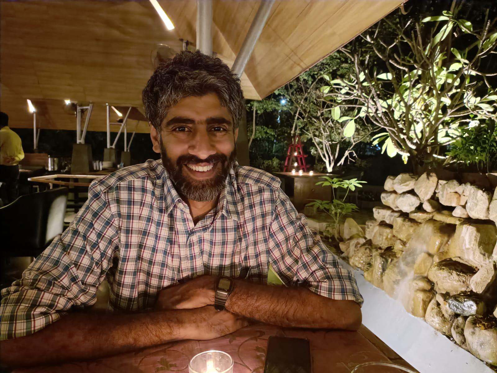
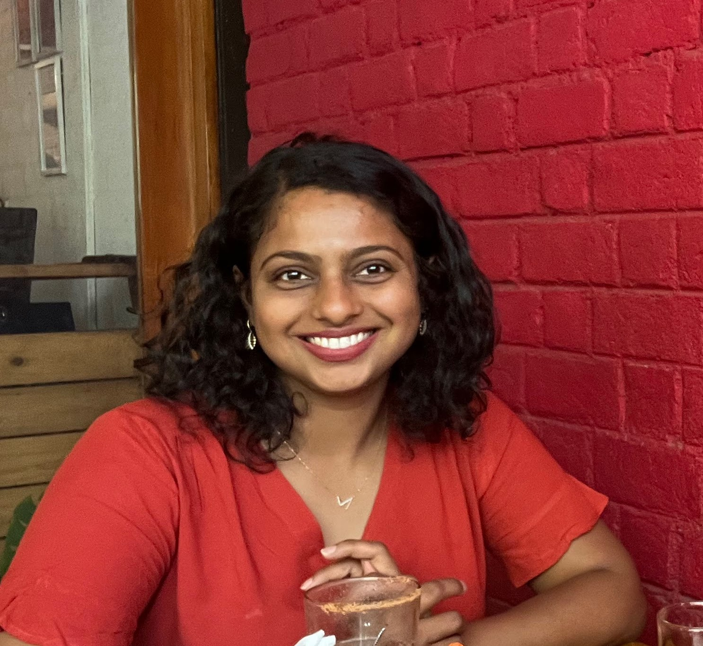
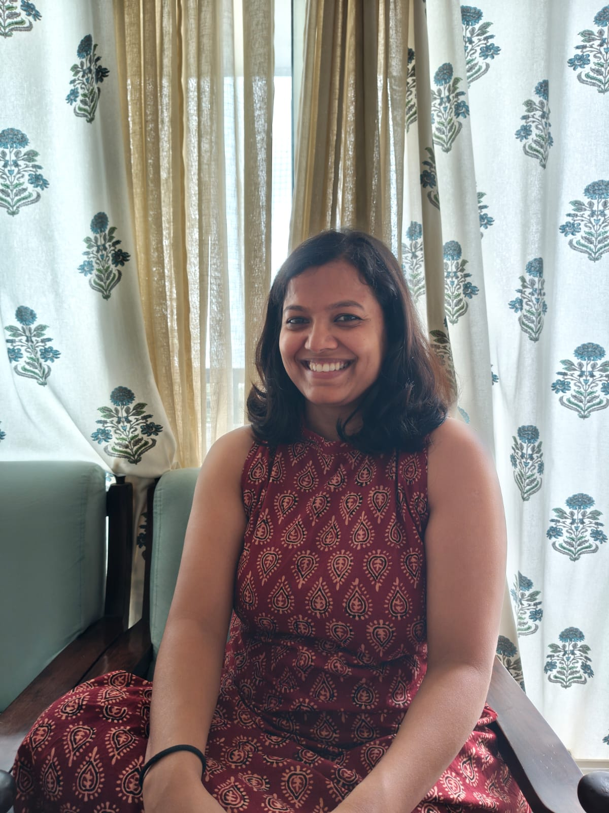
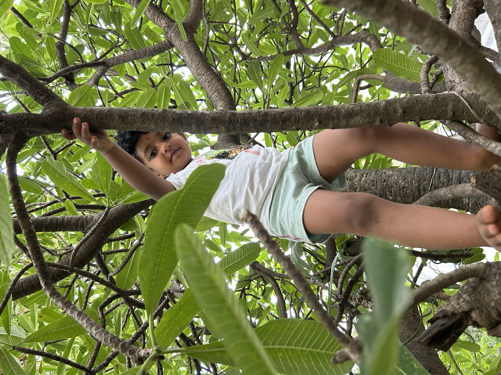
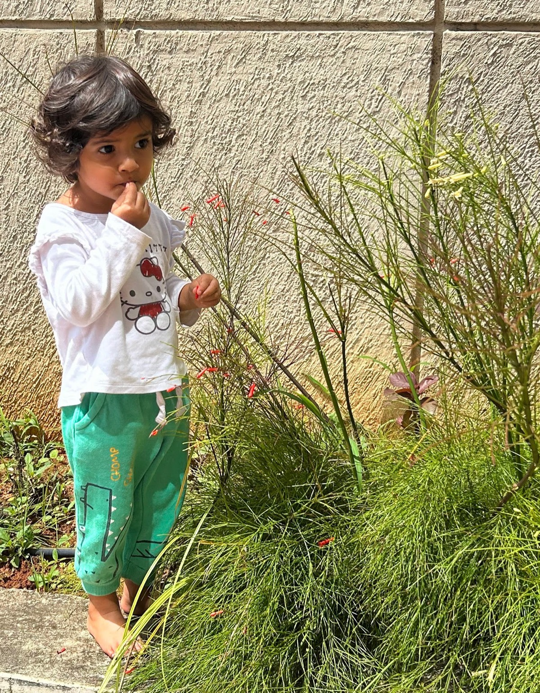
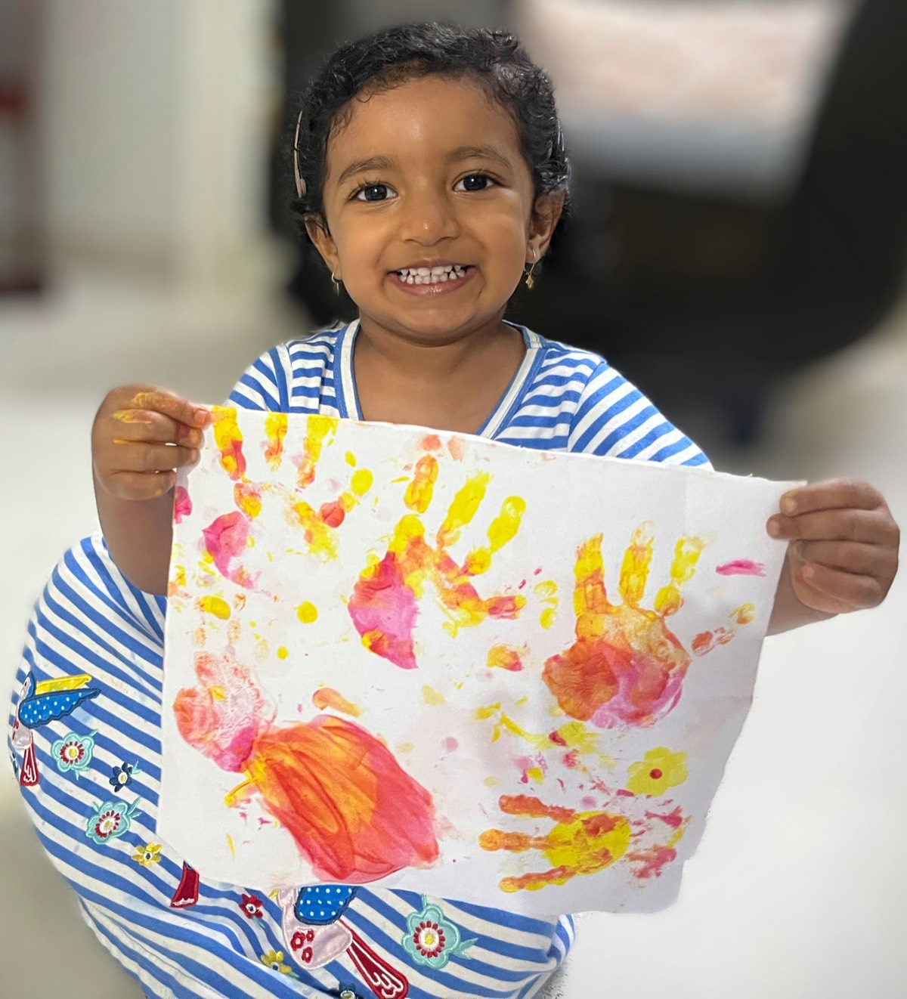

Climbing, exploring, discovering.
Scroll
Otesha is more than a school; it is an extension of home.
Otesha means “to plant a seed and watch it grow” - to nurture a dream. To us, this feels like a fitting metaphor for our learning space where children and adults grow together.
We believe a school is a second home to any child - a place of warmth and belonging. At Otesha, our deepest intention is to celebrate childhood by creating a nurturing environment for children. A space where they can explore freely, express themselves joyfully, and grow with ease.
Otesha was born out of a simple thought in 2025 - a need for a heartfelt school. A year later, located in Mysuru, we created a welcoming space for adults and children ready to embark on a journey of exploration with us.

Naveen is the founding member and trustee at Otesha. He is driven by a desire to create nurturing spaces where individuals can thrive.

Varshini is the founding member and trustee at Otesha. She is the thoughtful mind behind the school’s learning journey and is fascinated by the art of children and learning.

Aishwarya is the spark that set this journey in motion. Years ago, she said “we must start a school” and here we are! A founding member and an integral part of school, she is deeply involved in everyday practical areas at school.
Vivek is the gentle hand and voice at school. As a founding member, he is always ready to step in wherever needed, carrying a spirit of service and care into every corner of school.
At the heart of everything, is play.
It is through play that young children wonder, question, experiment, and begin to understand their world. In these moments of curiosity and imagination, learning unfolds naturally.
To us, play is where learning comes alive.
To learn more, read How children learn at Otesha →

The areas of learning below are central to our early childhood programme. Through these experiences, children’s holistic growth unfolds across interconnected areas.
Children spend time outdoors observing, exploring, and forming a relationship with the land around them. Through nature walks, gardening, seasonal changes, and quiet observation, they develop curiosity and wonder towards nature.
Language is woven into everyday life - through conversation, storytelling, listening, and songs. Children build confidence in expressing their thoughts and feelings while learning to listen with presence.
Through music, movement, craft, stories, and celebration, children explore creative expression and connect with culture. Art is one of their ways of understanding themselves and the world around them.
To us, art is about the journey. We create to develop hands, eyes, and focus. As children grow, the work grows with them - beginning with simple drawing and clay modelling, and slowly expanding to handwork such as knitting and other crafts.
Children learn through their bodies. Climbing, running, balancing, dancing, and working with their hands strengthen coordination, resilience, and confidence, while nurturing joy in physical activity.
Music is a big part of the daily rhythm at school. Through songs, finger games, and simple instruments, children experience melody, rhythm, and language.
Daily tasks such as cooking, cleaning, caring for materials, and supporting one another help children develop independence, responsibility, and a sense of belonging within school.




A day in the life of a child at Otesha unfolds within the daily rhythm.
Mornings begin with an unhurried arrival. Children settle into the space at their own pace. They join in simple, meaningful tasks around school, get involved in quiet, creative work, engage in open-ended play or immerse in outdoor exploration.
All of us at school gather for a morning circle to begin our day. A time of songs, movement, and immersive art, with the seasons guiding our themes for each day. The same songs come back week after week. Children know them by heart before long - and that knowing, that sense of something familiar, makes them feel at home.
As the morning unfolds, children engage in free play. Free play is self-initiated. Children may choose to play on their own or with others, creating their own games, stories and activities using imagination and creativity. Free play takes place both indoors and outdoors.
Children spend time indoors with simple, open-ended materials. They might build with blocks, engage in pretend play, or create their own small worlds and stories. The indoor space encourages focused play, allowing children’s ideas and narratives to unfold naturally and at their own pace.
There is generous time outdoors each day. In the open spaces, children climb, dig, balance, watch insects, build structures, and follow their curiosity. The natural world offers opportunities for exploration, allowing children to test their abilities, take small risks, and grow in confidence.
Children then move into focused time for the day. During this time, they engage with the core areas of learning at school. Through building, imagining, observing, and creating, children work with their head, heart, and hands. These explorations are guided by adults. Children take part in hands-on experiences such as gardening, wet-on-wet painting, colouring, finger knitting, and working with clay.
Snack and lunch are shared moments of enjoying good food cooked in the school kitchen. Children help prepare, serve, and tidy up.
As the day draws to a close, we gather ourselves, get together in a closing circle and get ready for going back home!
The focus at school is early childhood education for ages 2 to 6, in a mixed-age setting.
Mixed-age groups mirror the way children have always learned - from each other. Younger children absorb the behaviour and capabilities of older ones through natural observation and imitation. Older children develop patience, confidence, and quiet leadership by being around those who are younger.
We are located in Yadavagiri, nestled within a charming old house in Mysore.
Jackfruit, breadfruit, mango, sapota and a host of other trees grow alongside our children with each passing season. The school comes alive with the sounds of children, a thriving garden, ample indoor spaces, friendly little creatures, birdsong, and the frequent delight of a passing train.
Simple, vegetarian meals are prepared each day, with menus that shift naturally alongside the seasons. A morning snack and lunch make up meal times. Children and adults participate together - preparing food, setting the table, and serving one another.
Our school week runs from Monday to Friday, with each day beginning at 9 AM for all age groups. Closing times vary by age and are listed below.
| Age Group | School Hours |
|---|---|
| 2–3 years | 9:00 AM – 12:00 PM |
| 3–4 years | 9:00 AM – 1:30 PM |
| 4–6 years | 9:00 AM – 2:30 PM |
At present, we do not offer transport facilities. As the school grows, we will consider introducing transport.
If you would like to know more about us, do write to us - or, even better, come meet us in person. We would be happy to show you around the school, answer your questions, and explore the possibility of your child joining us on their journey here.
Write to us or Call us